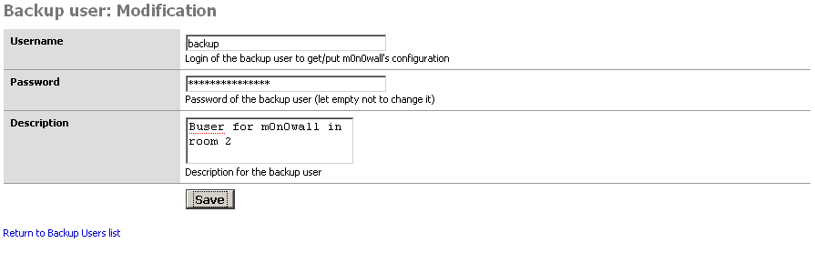
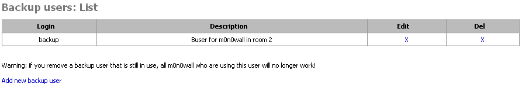
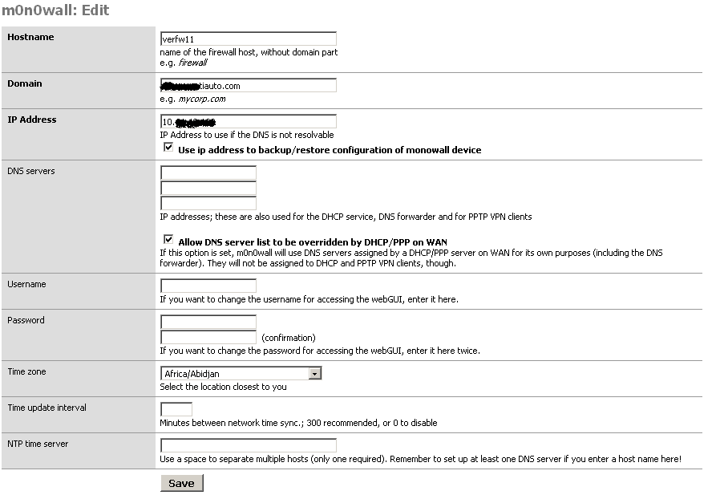
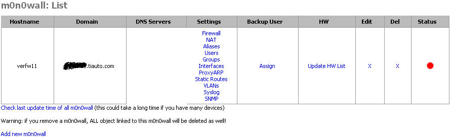
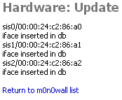
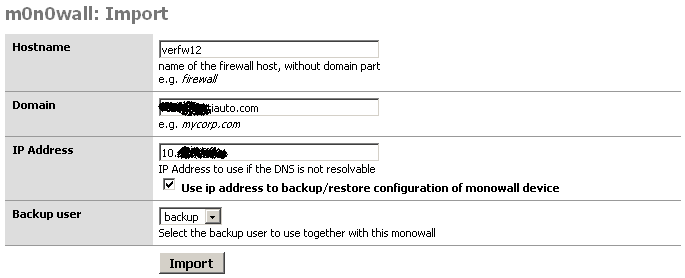
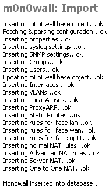

m0n0wall-cmi is working following this flow chart:
The mains components are the m0n0wall-cmi php GUI and the MySQL database that holds the m0n0wall devices parameters and convert them into XML.
The backup users are used to connect to m0n0wall devices through HTTPS and gather informations such as configuration in XML, interfaces names/MAC, m0n0wall version, etc..
As user of m0n0wall devices, they need access to following pages:
You need at least one backup user (or administrator login) to import m0n0wall devices or make the first save of the configuration.
To add a backup user, you can follow theses instructions:
First, select Backup users in the General menu, then click to Add new backup user and fill the form as on the screenshot:
Then, click the Save button and you should be able to see the following:
And voila! You should now be able to use this backup user to gather and restore configuration on m0n0wall devices
Now that you have a backup user configured, you can add a m0n0wall device that will use this backup user. Go to Main Page and click Add new m0n0wall. Fill the form as on the screenshot:
Note: Other field are optional for now, you can fill them and they will be applied to the m0n0wall at the next synchronization.
When you have filled all required information, you can click Save and you should see m0n0wall device added in the Main Page.
As you may have noticed, the status of the m0n0wall is red. This means some modification have been made to the m0n0wall and that you haven't synced it.
You have to assign a backup user to the m0n0wall you've just added, if you don't, you won't be able to connect to your m0n0wall... Click to Assign link and select your backup user.
Now, you have your m0n0wall device in the database, you have assigned it a backup user, but the central management interface don't know which kind of m0n0wall you've added. To tell this to the CMI, you have to Update HW List. This function will connect to your m0n0wall and fetch the version and physical interfaces information.
Back to main page, you can see that the version of m0n0wall firmware is now shown under the device's hostname.
Finally, to complete addition, you have to check last update time of the m0n0wall, do this by clicking on the update link under the status' bullet
Now you're ready to go ! Configure interfaces and firewall rules, don't forget not to cut access from the CMI to m0n0wall device and you're set!
The other method to have a m0n0wall inside the database is to import it from live running... This function will import all configuration supported into the database for further edition. To achieve this, in the General menu, click on Import new m0n0wall and fill form as shown in the following screenshot:
Then, click Import button, you should see something alike the next screenshot:
Your m0n0wall is now into database and ready to modify/use
When you have an initial devices to configure, you can follow this procedure: